¿Te has preguntado alguna vez dónde y de qué manera se almacenan y gestionan los datos que utilizamos diariamente? Si pensamos en cualquier acción de nuestra vida cotidiana, o si analizamos la mayoría de los ámbitos de actividad, nos encontramos que la utilización de las bases de datos está ampliamente extendida. Éstas, y los datos contenidos en ellas, serán imprescindibles para llevar a cabo multitud de acciones.
¿Crees que no es para tanto? Piensa en las siguientes situaciones:
Suponemos que no es necesario que continuemos más para darnos cuenta de que casi todo lo que nos rodea, en alguna medida, está relacionado con los datos, su almacenamiento y su gestión. El gran volumen de datos que actualmente manejamos y sus innumerables posibilidades requieren de la existencia de técnicos perfectamente formados y capaces de trabajar con ellos.
Este módulo profesional se centra en el estudio de las Bases de Datos y su uso en el desarrollo de aplicaciones. En esta primera unidad comenzaremos conociendo los primeros sistemas basados en ficheros para el almacenamiento y gestión de la información. Seguidamente, se desarrollarán los conceptos y definiciones básicas relacionadas con las bases de datos, posteriormente analizaremos sus modelos y tipos, un poco más adelante, podremos conocer las características y capacidades de los sistemas gestores de bases de datos y finalmente, identificaremos las herramientas reales con las que llevar a cabo la gestión dichas bases.
En la década de los setenta, los procesos básicos que se llevaban a cabo en una empresa se centraban en cuestiones relacionadas con contabilidad y facturación. Las necesidades de almacenamiento y gestión de información podían satisfacerse utilizando un número relativamente reducido de archivos en papel agrupados y ordenados, los típicos ficheros clásicos.
Al llevar a cabo una primera informatización, se pasó de tener los datos en formato papel a poder acceder a ellos de manera mucho más rápida a través del ordenador. En ese momento, la informática adaptó sus herramientas para que los elementos que el usuario maneja en el ordenador se parezcan a los que utilizaba manualmente. Así en informática se sigue hablado de ficheros, formularios, carpetas, directorios,...
La información debía ser trasladada desde el papel al formato digital y por lo general, era necesario almacenarla para su posterior recuperación, consulta y procesamiento. De este modo, para llevar a cabo un tratamiento eficiente de ésta era necesario establecer métodos adecuados para su almacenamiento. El elemento que permitió llevar a cabo el almacenamiento de datos de forma permanente en dispositivos de memoria masiva fue el fichero o archivo.
Fichero o archivo:conjunto de información relacionada, tratada como un todo y organizada de forma estructurada. Es una secuencia de dígitos binarios que organiza información relacionada con un mismo aspecto.
Los ficheros están formados por registros lógicos que contienen datos relativos a un mismo elemento u objeto (por ejemplo, los datos de usuarios de una plataforma educativa). A su vez, los registros están divididos en campos que contienen cada una de las informaciones elementales que forman un registro (por ejemplo, el nombre del usuario o su dirección de correo electrónico).
Hemos de resaltar que los datos están almacenados de tal forma que se puedan añadir, suprimir, actualizar o consultar individualmente en cualquier momento.
Como los ficheros suelen ser muy voluminosos, solo se pueden llevar a la memoria principal partes de ellos para poder procesarlos. La cantidad de información que es transferida entre el soporte en el que se almacena el fichero, y la memoria principal del ordenador, en una sola operación de lectura/grabación, recibe el nombre de registro físico o bloque.
Normalmente en cada operación de lectura/grabación se transfieren varios registros del fichero, es decir un bloque suele contener varios registros lógicos. Al número de registros que entran en un bloque se le conoce con el nombre de factor de blocaje, y a esta operación de agrupar varios registros en un bloque se le llama bloqueo de registros.
Según la función que vaya a desempeñar los ficheros, éstos pueden ser clasificados de varias maneras. En la siguiente imagen puedes observar una posible clasificación.
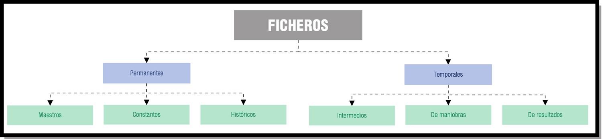
Los ficheros se almacenan en soportes de información manejados por dispositivos periféricos del ordenador, que permiten leer y grabar datos en el soporte. Los soportes más utilizados para almacenar los ficheros son las cintas magnéticas, memorias USB y los discos (magnéticos, ópticos, o magneto-ópticos y SSD). Dentro de estos tipos de soporte existen en el mercado una gran variedad de modelos.
Inicialmente, los primeros sistemas de almacenamiento físico eran tambores de cinta magnética. Tenían unas dimensiones parecidas a los discos de vinilo. Estos tambores funcionaban de manera similar a los antiguos casetes, pero sus mayores dimensiones les permitían almacenar gran cantidad de datos en formato digital, es decir en ceros y unos, en orden secuencial.
Posteriormente, los sistemas de almacenamiento de información comenzaron a cambiar de la mano de los avances en el hardware, en concreto con la aparición del disquete y del disco duro. Eran dispositivos de acceso aleatorio, no siendo necesario en ellos pasar por todos los datos desde el inicio hasta la zona donde se encuentra la información que nos interesa.
Por tanto, se distinguen dos tipos de soportes para el almacenamiento de datos:
Hay que tener en cuenta la aparición de los discos duros de estado sólido, los cuales de forma lenta pero consistente han ido afianzándose en el mercado actual. Estos discos tienen unos tiempos de lectura escritura muy rápidos con lo que se logra acelerar drásticamente muchos procesos de gestión de datos.
Para saber más
Conoce más sobre las características de cintas y discos a través de los enlaces que te proponemos:
Cintas magnéticas de almacenamiento de datos.
Discos magnéticos.
Discos duros.
Discos ópticos.
Tecnología de los discos ópticos.
Discos magneto-ópticos.
Disco duro de estado sólido
A medida que la tecnología ha ido evolucionando, atendiendo principalmente a los avances hardware, el acceso a la información contenida en los diferentes tipos de ficheros ha variado mucho.
Los objetivos fundamentales de estas modificaciones pueden resumirse en los siguientes puntos:
Las distintas formas de organizar un fichero en un soporte de memoria o, lo que se conoce también por métodos de acceso a los ficheros se detallan en el siguiente gráfico:
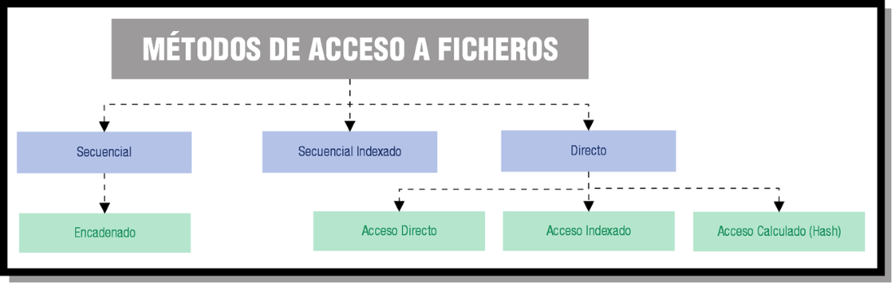
Las organizaciones secuencial, de acceso aleatorio o directo y de acceso indexado son las más comunes. En los siguientes epígrafes se detallarán las características de cada uno de los métodos de acceso a los ficheros.
Un fichero con organización secuencial se caracteriza porque sus registros están almacenados de forma contigua, de manera, que la única forma de acceder a él, es leyendo un registro tras otro desde el principio hasta el final. En los ficheros secuenciales suele haber una marca indicativa del fin del fichero, que suele denominarse EOF (End of File). Para detectar el final del fichero sólo es necesario encontrar la marca EOF.
Este tipo de ficheros pueden utilizar dispositivos o soportes no direccionables o de acceso secuencial, como son las cintas magnéticas de almacenamiento de datos. También se utiliza en los CD de audio y los DVD de vídeo, en los que la música o las imágenes se almacenan a lo largo de una espiral continua.
Los registros almacenados se identifican por medio de una información ubicada en uno de sus campos, a este campo se le denomina clave o llave. Si se ordena un archivo secuencial por su clave, es más rápido realizar cualquier operación de lectura o escritura.
Otras características relevantes de los ficheros secuenciales son:
En el siguiente gráfico se observa la estructura de un fichero secuencial.
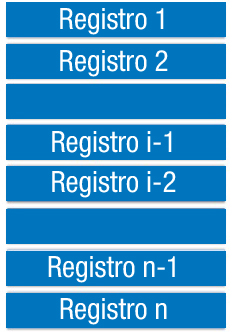
En este tipo de ficheros se puede acceder a un registro indicando la posición relativa del mismo dentro del archivo o, más comúnmente, a través de una clave que forma parte del registro como un campo más. Estos archivos deben almacenarse en dispositivos de memoria masiva de acceso directo, como son los discos magnéticos.
Campo clave: campo que permite identificar y localizar un registro de manera ágil y organizada.
Cada uno de los registros se guarda en una posición física, que dependerá del espacio disponible en memoria masiva, de ahí que la distribución de los registros sea aleatoria dentro del soporte de almacenamiento. Para acceder a la posición física de un registro se utiliza una dirección o índice, no siendo necesario recorrer todo el fichero para encontrar un determinado registro.
A través de una transformación específica aplicada a la clave, se obtendrá la dirección física en la que se encuentra el registro. Según la forma de realizar esta transformación, existen diferentes modos de acceso:
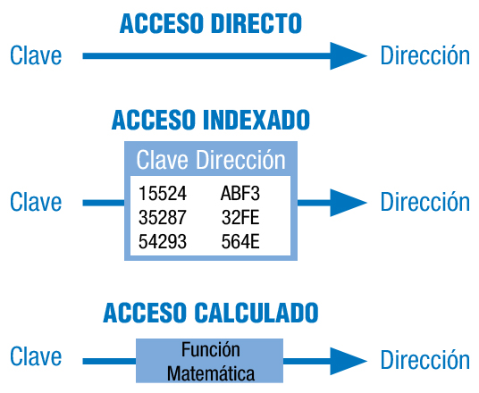
En el acceso directo la clave coincide con la dirección, debiendo ser numérica y comprendida dentro del rango de valores de las direcciones. Es el método más rápido.
La medida básica de posicionamiento del puntero en el fichero es el byte, dependiendo del tipo de codificación de caracteres que empleemos ( Unicode, ANSI ) se utilizarán 1 o 2 bytes por carácter respectivamente. Teniendo esto en cuenta, el puntero avanzará de uno en uno o de dos en dos bytes para poder leer o escribir cada carácter.
Otras características fundamentales de los ficheros de acceso directo o aleatorio son:
Se basan en la utilización de índices, que permiten el acceso a un registro del fichero de forma directa, sin tener que leer los anteriores. Estos índices son similares a los de los libros. Si nos interesa leer un capítulo concreto podemos recurrir al índice que nos dice en que página comienza, y abrimos el libro por esa página, sin tener que mirar en todas las páginas anteriores para localizarlo.
Por tanto, existirá una zona de registros en la que se encuentran los datos del archivo y una zona de índices, que contiene una tabla con las claves de los registros y las posiciones donde se encuentran los mismos. La tabla de índices estará ordenada por el campo clave.
La tabla de índices será cargada en memoria principal para realizar en ella la búsqueda de la fila correspondiente a la clave del registro a encontrar, obteniéndose así la dirección donde se encuentra el registro. Una vez localizada la dirección, sólo hay que acceder a la zona de registros en el soporte de almacenamiento y posicionarnos en la dirección indicada. Puesto que la tabla debe prever la inclusión de todas las direcciones posibles del archivo, su principal inconveniente resulta determinar su tamaño y mantenerla ordenada por los valores de la clave.
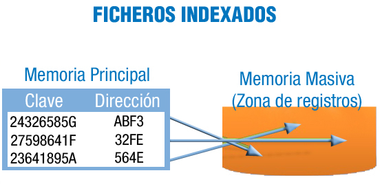
Las características más relevantes de un fichero indexado, son las siguientes:
Existen otros tipos de organización de ficheros, ficheros secuenciales indexados y ficheros de acceso calculado, a continuación se detallan las características de cada uno de ellos.
También llamados parcialmente indexados, al igual que en los ficheros indexados existe una zona de índices y otra zona de
registros de datos, pero esta última se encuentra dividida en segmentos (bloques de registros) ordenados.
En la tabla de índices, cada fila hace referencia a cada uno de los segmentos. La clave corresponde al último registro y el
índice apunta al registro inicial. Una vez que se accede al primer registro del segmento, dentro de él se localiza (de forma
secuencial) el registro buscado.
Esta organización es muy utilizada, tanto para procesos en los que intervienen pocos registros como para aquellos en los que
se maneja el fichero completo.
Las principales características son:
Cuando utilizamos ficheros indexados es necesario siempre tener que consultar una tabla para obtener la dirección de
almacenamiento a partir de la clave. La técnica del acceso calculado o hash, permite accesos más rápidos, ya que en
lugar de consultar una tabla, se utiliza una transformación o función matemática (función de hashing) conocida, que a
partir de la clave genera la dirección de cada registro del archivo. Si la clave es alfanumérica, deberá previamente ser
transformada en un número.
El mayor problema que presenta este tipo de ficheros es que a partir de diferentes claves se obtenga la misma dirección al
aplicar la función matemática o transformación. A este problema se le denomina colisión, y las claves que generan la
misma dirección se conocen por sinónimos. Para resolver este problema se aplican diferentes métodos, como tener un
bloque de excedentes o zona de sinónimos, o crear un archivo de sinónimos, etc.
Para llevar a cabo la transformación existen multitud de métodos, siendo algunos:
Una buena transformación o función de hash, será aquella que produzca el menor número de colisiones. En este caso hay que buscar una función, a ser posible biunívoca, que relacione los posibles valores de la clave con el conjunto de números correlativos de dirección. Esta función consistirá en realizar una serie de cálculos matemáticos con el valor de la clave hasta obtener un número entre 1 y n, siendo n el número de direcciones que tiene el fichero.
En función del uso que se vaya a dar al fichero, serán adecuados unos tipos u otros de organización. Mediante la utilización de parámetros de referencia, podremos determinar el uso de un fichero. Estos parámetros son:
Como hemos visto anteriormente, los ficheros permiten organizar y memorizar conjuntos de datos del mismo tipo o naturaleza con una determinada estructura, siendo un medio para el almacenamiento de los datos o resultados de una aplicación específica. Pero si las aplicaciones, al ser diseñadas, deben depender directamente de sus ficheros o archivos, se pierde independencia y surgen serios inconvenientes: como información duplicada, incoherencia de datos, fallos de seguridad, etc.
Para dar solución a todos estos problemas, surge el concepto de base de datos que permite reunir toda la información relacionada en un único sistema de almacenamiento, pudiendo cualquier aplicación utilizarla de manera independiente y ofreciendo una mejora en el tratamiento de la información, así como una evolución para el desarrollo de aplicaciones. Paralelamente, se han desarrollado una serie de conceptos y técnicas gracias a las cuales se suplen los inconvenientes ya mencionados.
La gestión de las bases de datos ha experimentado gran cantidad de cambios, partiendo de aplicaciones especializadas hasta llegar a convertirse en el núcleo de los entornos informáticos modernos. Con la llegada de Internet en los noventa, el número de usuarios de bases de datos creció exponencialmente, y aunque muchos de ellos no sean conscientes de ello, el acceso a dichas bases forma parte de la vida cotidiana de muchos de nosotros.
Conocer los sistemas que gestionan las bases de datos, sus conceptos fundamentales, el diseño, lenguajes y la implementación de éstas, podemos considerarlo imprescindible para alguien que se está formando en el campo de la informática.
A finales de los setenta, la aparición de nuevas tecnologías de manejo de datos a través de los sistemas de bases de datos supuso un considerable cambio. Los sistemas basados en ficheros separados dieron paso a la utilización de sistemas gestores de bases de datos, que son sistemas software centralizados o distribuidos que ofrecen facilidades para la definición de bases de datos, selección de estructuras de datos y búsqueda de forma interactiva o mediante lenguajes de programación.
Llegados a este punto, te preguntarás... ¿Qué es una base de datos?
Base de datos: Es una colección de datos relacionados lógicamente entre sí, con una definición y descripción comunes y que están estructurados de una determinada manera. Es un conjunto estructurado de datos que representa entidades y sus interrelaciones, almacenados con la mínima redundancia y posibilitando el acceso a ellos eficientemente por parte de varias aplicaciones y usuarios.
La base de datos no sólo contiene los datos de la organización, también almacena una descripción de dichos datos. Esta descripción es lo que se denomina metadatos, se almacena en el diccionario de datos o catálogo y es lo que permite que exista independencia de datos lógica-física.
Una base de datos constará de los siguientes elementos:
Las ventajas fundamentales que ofrece el uso de bases de datos se resumen a continuación:
Ya sabemos lo que es una base de datos y sus características principales, pero es necesario conocer quien las usa y para qué.
Existen cuatro tipos de personas que pueden hacer uso de una base de datos: el administrador, los diseñadores de la base de datos, los programadores de aplicaciones y los usuarios finales.
| Tipo | Funciones y características |
|---|---|
| El administrador | Es la persona encargada de la creación o implementación física de la base de datos. Es quien escoge los tipos de ficheros, los índices que hay que crear, la ubicación de éstos, etc. En general, es quien toma las decisiones relacionadas con el funcionamiento físico del almacenamiento de información. Siempre teniendo en cuenta las posibilidades del sistema de información con el que trabaje. Junto a estas tareas, el administrador establecerá la política de seguridad y de acceso para garantizar el menor número de problemas. |
| Los diseñadores | Son las personas encargadas de diseñar cómo será la base de datos. Llevarán a cabo la identificación de los datos, las relaciones entre ellos, sus restricciones, etc. Para ello han de conocer a fondo los datos y procesos a representar en la base de datos. Si estamos hablando de una empresa, será necesario que conozcan las reglas de negocio en la que esta se mueve. Para obtener un buen resultado, el diseñador de la base de datos debe implicar en el proceso a todos los usuarios de la base de datos, tan pronto como sea posible. |
| Los programadores de aplicaciones | Una vez diseñada y construida la base de datos, los programadores se encargarán de implementar los programas de aplicación que servirán a los usuarios finales. Estos programas de aplicación ofrecerán la posibilidad de realizar consultas de datos, inserción, actualización o eliminación de los mismos. Para desarrollar estos programas se utilizan lenguajes de tercera o cuarta generación . |
| Los usuarios finales | Son los clientes finales de la base de datos. Al diseñar, implementar y mantener la base de datos se busca cumplir los requisitos establecidos por el cliente para la gestión de su información. |
Enumerar todos y cada uno de los campos donde se utilizan las bases de datos es complejo, aunque seguro que quedarán muchos en el tintero, a continuación se recopilan algunos de los ámbitos donde se aplican.
Utilizamos a diario las bases de datos, pero ¿Dónde se encuentra realmente almacenada la información?. Las bases de datos pueden tener un tamaño muy reducido (1 MegaByte o menos) o bien, ser muy voluminosas y complejas (del orden de Terabytes). Sin embargo todas las bases de datos normalmente se almacenan y localizan en discos duros y otros dispositivos de almacenamiento, a los que se accede a través de un ordenador. Una gran base de datos puede necesitar servidores en lugares diferentes, y viceversa, pequeñas bases de datos pueden existir como archivos en el disco duro de un único equipo.
A continuación, se exponen los sistemas de almacenamiento de información más utilizados para el despliegue de bases de datos, comenzaremos por aquellos en los que pueden alojarse bases de datos de tamaño pequeño y mediano, para después analizar los sistemas de alta disponibilidad de grandes servidores.
Para saber más
Puedes ampliar más información sobre algunos de los sistemas de almacenamiento vistos, además de tendencias y curiosidades en almacenamiento, a través de los siguientes enlaces:
Sistemas RAID Almacenamiento de datos de Oracle. (En Inglés) Sistemas NAS Tendencias: Bases de datos en la nube. Sistemas SAN Curiosidad: ¿Dónde guarda Google todos sus datos?
La clasificación tradicional de las bases de datos establece tres modelos de bases de datos: jerárquico, en red y relacional. En la
actualidad el modelo de bases de datos más extendido es el relacional. Aunque, hay que tener en cuenta que dos de sus variantes
(modelo de bases de datos distribuidas y orientadas a objetos) son las que se más se están utilizando en los últimos tiempos.
En los siguientes epígrafes analizaremos cada uno de ellos, así como otros modelos de bases de datos existentes.
Debes conocer
Conoce las características generales y graba en tu memoria fotográfica los gráficos que representan a cada uno de los modelos expuestos en el siguiente artículo:
Cuando IBM creó su Sistema Administrador de Información o IMS, se establecieron las bases para que la gran mayoría de sistemas de gestión de información de los años setenta utilizaran el modelo jerárquico. También recibe el nombre de modelo en árbol, ya que utiliza una estructura en árbol invertido para la organización de los datos.
La información se organiza con un jerarquía en la que la relación entre las entidades de este modelo siempre es del tipo padre/hijo. De tal manera que existen nodos que contienen atributos o campos y que se relacionarán con sus nodos hijos, pudiendo tener cada nodo más de un hijo, pero un nodo siempre tendrá un sólo padre.
Los datos de este modelo se almacenan en estructuras lógicas llamadas segmentos. Los segmentos se relacionan entre sí utilizando arcos. La forma visual de este modelo es de árbol invertido, en la parte superior están los padres y en la inferior los hijos.
Hoy en día, debido a sus limitaciones, el modelo jerárquico está en desuso. En el siguiente gráfico puedes observar la estructura de ç almacenamiento del modelo jerárquico.
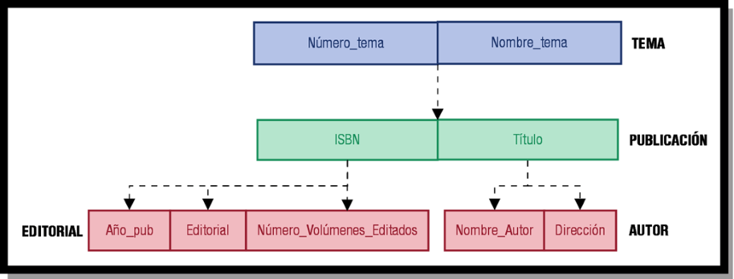
Para saber más
Si deseas completar tus conocimientos a cerca de este modelo, te proponemos los siguientes enlaces:
El modelo de datos en red aparece a mediados de los sesenta como respuesta a limitaciones del modelo jerárquico en cuanto a representación de relaciones más complejas. Podemos considerar a IDS (Integrated Data Store) de Bachman como el primer sistema de base de datos en red. Tras él se intentó crear un estándar de modelo de red por parte de CODASYL, siendo un modelo que tuvo gran aceptación a principios de los setenta.
El modelo en red organiza la información en registros (también llamados nodos) y enlaces. En los registros se almacenan los datos, mientras que los enlaces permiten relacionar estos datos. Las bases de datos en red son parecidas a las jerárquicas sólo que en ellas puede haber más de un padre.
En este modelo se pueden representar perfectamente cualquier tipo de relación entre los datos, pero hace muy complicado su manejo. Al no tener que duplicar la información se ahorra espacio de almacenamiento.
El sistema de gestión de información basado en el modelo de red más popular es el sistema IDMS.
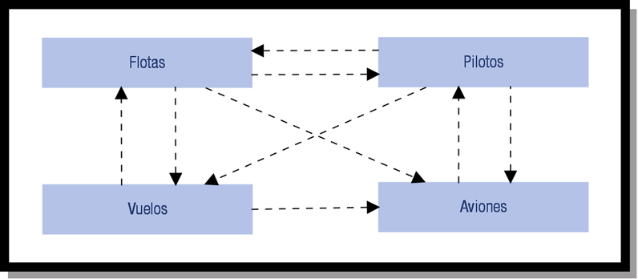
Para saber más
Si deseas completar tus conocimientos a cerca de este modelo, te proponemos los siguientes enlaces:
Este modelo es posterior a los dos anteriores y fue desarrollado por Codd en 1970. Hoy en día las bases de datos relacionales son las más utilizadas.
En el modelo relacional la base de datos es percibida por el usuario como un conjunto de tablas. Esta percepción es sólo a nivel lógico, ya que a nivel físico puede estar implementada mediante distintas estructuras de almacenamiento.
El modelo relacional utiliza tablas bidimensionales (relaciones) para la representación lógica de los datos y las relaciones entre ellos. Cada relación (tabla) posee un nombre que es único y contiene un conjunto de columnas.
Se llamará registro ,entidad o tupla a cada fila de la tabla y campo o atributo a cada columna de la tabla.
A los conjuntos de valores que puede tomar un determinado atributo, se le denomina dominio.
Una clave será un atributo o conjunto de atributos que identifique de forma única a una tupla.
Las tablas deben cumplir una serie de requisitos:
A continuación puedes observar cómo es una relación con sus tuplas y atributos en el modelo relacional.
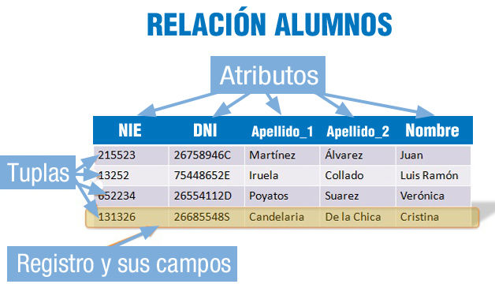
El lenguaje habitual para construir las consultas a bases de datos relacionales es SQL, Structured Query Language o Lenguaje Estructurado de Consultas, un estándar implementado por los principales motores o sistemas de gestión de bases de datos relacionales.
Durante su diseño, una base de datos relacional pasa por un proceso al que se conoce como normalización de una base de datos.
Para saber más
Si deseas completar tus conocimientos a cerca de este modelo, te proponemos los siguientes enlaces:
El modelo orientado a objetos define una base de datos en términos de objetos, sus propiedades y sus operaciones. Los objetos con la misma estructura y comportamiento pertenecen a una clase, y las clases se organizan en jerarquías. Las operaciones de cada clase se especifican en términos de procedimientos predefinidos denominados métodos. Algunos sistemas existentes en el mercado, basados en el modelo relacional, han sufrido evoluciones incorporando conceptos orientados a objetos. A estos modelos se les conoce como sistemas objeto-relacionales.
El objetivo del modelo orientado a objetos es cubrir las limitaciones del modelo relacional. Gracias a este modelo se incorporan mejoras como la herencia entre tablas, los tipos definidos por el usuario, disparadores almacenables en la base de datos (triggers), soporte multimedia, etc. Este tipo de Base de Datos se crea pensando en aplicaciones más complejas o sofisticadas como, por ejemplo, el diseño y fabricación en ingeniería (CAD/CAM, CIM), los experimentos científicos, los sistemas de información geográfica o los sistemas multimedia.
Los conceptos más importantes del paradigma de objetos que el modelo orientado a objetos incorpora son:
Desde la aparición de la programación orientada a objetos (POO u OOP) se empezó a pensar en bases de datos adaptadas a estos lenguajes. Este modelo es considerado como el fundamento de las bases de datos de tercera generación, siendo consideradas las bases de datos en red como la primera y las bases de datos relacionales como la segunda generación. Aunque no han reemplazado a las bases de datos relacionales, si son el tipo de base de datos que más está creciendo en los últimos años.
Para saber más
Si deseas completar tus conocimientos a cerca de este modelo, te proponemos los siguientes enlaces:
Además de los modelos clásicos vistos hasta el momento, vamos a detallar a continuación las particularidades de otros modelos de bases de datos existentes y que, en algunos casos, son una evolución de los clásicos.
Las bases de datos pertenecientes a este modelo, son un híbrido entre las bases del modelo relacional y el orientado a objetos.
El mayor inconveniente de las bases de datos orientadas a objetos radica en los costes de la conversión de las bases de datos
relacionales a bases de datos orientadas a objetos.
En una base de datos objeto-relacional (BDOR) siempre se busca
obtener lo mejor del modelo relacional, incorporando las mejoras ofrecidas por la orientación a objetos. En este modelo se
siguen almacenando tuplas, aunque la estructura de las tuplas no está restringida sino que las relaciones pueden ser definidas
en función de otras, que es lo que denominamos herencia directa.
El estándar en el que se basa este modelo es
SQL99
. Este estándar ofrece la posibilidad de añadir a las bases de datos relacionales procedimientos almacenados de usuario,
triggers, tipos definidos por el usuario, consultas recursivas, bases de datos
OLAP
, tipos
LOB
, ...
Otra característica a destacar es la capacidad para incorporar funciones que tengan un código en algún lenguaje de programación
como por ejemplo: SQL, Java, C, etc.
La gran mayoría de las bases de datos relacionales clásicas de gran tamaño, como Oracle, SQL Server, etc., son objeto-relacionales.
En este modelo las bases de datos almacenan la información y permiten realizar deducciones a través de
inferencias
. Es decir, se derivan nuevas informaciones a partir de las que se han introducido explícitamente en la base de
datos por parte del usuario.
Las bases de datos deductivas son también llamadas bases de datos lógicas, al basarse en lógica matemática. Surgieron para
contrarrestar las limitaciones del modelo relacional para la respuesta a consultas
recursivas
y la deducción de relaciones indirectas entre los datos almacenados.
Para saber más
Si deseas completar tus conocimientos sobre las bases de datos deductivas, te proponemos el siguiente enlace:
Son bases de datos ideadas para desarrollar aplicaciones muy concretas. Básicamente almacena sus datos con varias dimensiones, es decir que en vez de un valor, encontramos varios dependiendo de los ejes definidos o una base de datos de estructura basada en dimensiones orientada a consultas complejas y alto rendimiento. En una base de datos multidimensional, la información se representa como matrices multidimensionales, cuadros de múltiples entradas o funciones de varias variables sobre conjuntos finitos. Cada una de estas matrices se denomina cubo. Eso facilita el manejo de grandes cantidades de datos dentro de empresas, dándole a esto una amplia aplicación dentro de varias áreas y diferentes campos del conocimiento humano.
Son bases de datos caracterizadas por su velocidad para gestionar el intercambio de información, se utilizan sobre todo en sistemas bancarios, análisis de calidad y datos de producción industrial. Son bases de datos muy fiables, ya que en ellas cada una de las operaciones de inserción, actualización o borrado se realizan completamente o se descartan.
Como hemos visto, por cada modelo de datos se establecen sustanciales diferencias entre unas bases de datos y otras, pero, ¿Esta es la única clasificación de las bases de datos existente? No, vamos a ver a continuación una detallada descripción de los tipos de bases de datos teniendo en cuenta varios criterios.
Debes conocer
Te dejamos una completa clasificación de las bases de datos, teniendo en cuenta diferentes puntos de vista, con los que podrás conocer la gran variedad de tipos que existen.
Diferentes clasificaciones de las bases de datos.
- Bases de datos según su contenido:
- Bases de datos con información actual: contienen información muy concreta y actualizada, normalmente, de tipo numérico: estadísticas, series históricas, resultados de encuestas, convocatorias de becas o subvenciones, convocatorias de eventos, ofertas de empleo,...
- Directorios: recogen datos sobre personas o instituciones especializadas en una actividad o materia concreta. Hay directorios de profesionales, de investigadores, de centros de investigación, de bibliotecas, de revistas científicas, de empresas, de editoriales,...
- Bases de datos documentales. En este último grupo, cada registro se corresponde con un documento, sea éste de cualquier tipo: una publicación impresa, un documento audiovisual, gráfico. Dependiendo de si incluyen o no el contenido completo de los documentos que describen, podremos tener:
- Bases de datos de texto completo: constituidas por los propios documentos en formato electrónico, por un volcado completo de su texto.
- Archivos electrónicos de imágenes: constituidos por referencias que permiten un enlace directo con la imagen del documento original, sea éste un documento iconográfico (fotografías, imágenes de televisión,...) o un documento impreso digitalizado en formato de imagen.
- Bases de datos referenciales: sus registros no contienen el texto original sino tan sólo la información fundamental para describir y permitir la localización de documentos impresos, sonoros, iconográficos, audiovisuales o electrónicos. En estos sistemas de información sólo se puede obtener referencias sobre documentos que habrá que localizar posteriormente en otro servicio (archivo, biblioteca, fototeca, fonoteca,...) o solicitar a un servicio de suministro de documentos.
- Bases de datos según su uso:
- Base de datos individual: Es una base de datos utilizada básicamente por una persona. El sistema administrador de la base de datos y los datos son controlados por el mismo usuario. Puede estar almacenada en la unidad de disco duro del usuario o en el servidor de archivos de una red de área local. Por ejemplo, un gerente de ventas podría contar con una base de datos para el control de sus vendedores y su desempeño.
- Base de datos compartida: Son bases de datos con múltiples usuarios y que muy probablemente pertenezcan a la misma organización, como la base de datos de una compañía. Se encuentra almacenada en una computadora potente y bajo el cuidado de un profesional en el área, el administrador de la base de datos. Los usuarios tienen acceso a la base de datos mediante una red de área local o una red de área extensa.
- Base de datos de acceso público: Son bases de datos accesibles por cualquier persona. Puede no ser necesario pagar un canon para hacer uso de los datos contenidos en ellas.
- Base de datos propietarias o bancos de datos: Se trata en general de bases de datos de gran tamaño, desarrolladas por una organización y que contienen temas especializados o de carácter particular. El público general puede tener acceso a estas bases a veces de forma gratuita y otras mediante el pago de una cuota. Pueden ofrecer información que va desde negocios, economía, inversión, técnica y científica hasta servicios de entretenimiento. Permiten encontrar en minutos lo que tardaría horas ojeando revistas.
- Bases de datos según la variabilidad de la información:
- Bases de datos estáticas: Son bases de datos de sólo lectura. Se utilizan para el almacenamiento de datos históricos que pueden ser analizados y utilizados para el estudio del comportamiento de un conjunto de datos a través del tiempo. Permiten realizar proyecciones y toma de decisiones.
- Bases de datos dinámicas: Son bases de datos donde la información almacenada se modifica con el tiempo, permitiendo operaciones como actualización y adición de datos, además de las operaciones fundamentales de consulta
- Bases de datos según la localización de la información:
- Bases de datos centralizadas: Se trata de bases de datos ubicadas en un único lugar, un único computador. Pueden ser bases de datos monousuario que se ejecutan en ordenadores personales o sistemas de bases de datos de alto rendimiento que se ejecutan en grandes sistemas. Este tipo de organización facilita las labores de mantenimiento, sin embargo, hace que la información contenida en dicha base, sea más vulnerable a posibles fallos y limita su acceso. Este tipo de bases de datos puede ofrecer dentro de la arquitectura Cliente/Servidor dos configuraciones:
- Basada en anfitrión: ocurre cuando la máquina cliente y la máquina servidor son la misma. Los usuarios se conectarán directamente a la máquina donde se encuentra la base de datos.
- Basada en Cliente/Servidor: ocurrirá cuando la base de datos reside en una máquina servidor y los usuarios acceden a la base de datos desde su máquina cliente a través de una red.
- Bases de datos distribuidas: Según la naturaleza de la organización es probable que los datos no se almacenen en un único punto, sino que se sitúen en un lugar o lugares diferentes a donde se encuentran los usuarios. Una base de datos distribuida es la unión de las bases de datos mediante redes. Los usuarios se vinculan a los servidores de bases de datos distantes mediante una amplia variedad de redes de comunicación. Puede imaginarse una compañía con diferentes oficinas regionales, donde se encuentra distribuida la base de datos. Sin embargo, los ejecutivos pueden tener acceso a la información de todas las oficinas regionales.
- Bases de datos según el organismo productor:
- Bases de datos de organismos públicos y de la administración: Las bibliotecas y centros de documentación de los ministerios, instituciones públicas, universidades y organismos públicos de investigación elaboran gran cantidad de recursos de información. Estos sistemas pueden ser:
- Bases de datos de acceso público, sean gratuitas o no.
- Bases de datos de uso interno, con información de acceso restringido.
- Bases de datos de instituciones sin ánimo de lucro: Fundaciones, asociaciones, Sindicatos y organizaciones no gubernamentales elaboran frecuentemente sus propios sistemas de información especializados.
- Bases de datos de entidades privadas o comerciales: Los centros de documentación, bibliotecas y archivos de las empresas pueden elaborar distintos tipos de sistemas de información:
- Bases de datos de uso interno para facilitar la circulación de información dentro de la empresa
- Bases de datos de uso interno que ocasionalmente ofrecen servicio hacia el exterior (usuarios particulares u otras instituciones).
- Bases de datos comerciales, diseñadas específicamente para ser utilizadas por usuarios externos.
- Bases de datos realizadas por cooperación en red: Se trata de sistemas de información cuya elaboración es compartida por diversas instituciones. bases de datos internacionales se elaboran a través de este sistema de trabajo, con diversos centros nacionales responsables de la información perteneciente a cada país.
- Bases de datos según el modo de acceso:
- Bases de datos de acceso local: Para consultarlas es necesario acudir al organismo productor, a su biblioteca o centro de documentación. Pueden ser consultables en monopuesto o en varios puntos de una red local.
- Bases de datos en CD-ROM: Pueden adquirirse por compra o suscripción bien directamente por un particular o por una biblioteca o centro de documentación que permita su consulta a sus usuarios. En algunas instituciones se instalan diferentes CD-ROM en una red local para permitir su consulta desde cualquier ordenador conectado a la misma.
- Bases de datos en línea: Pueden consultarse desde cualquier ordenador conectado a Internet. La consulta puede ser libre (gratuita) o exigir la solicitud previa de una clave personal de entrada (denominada comúnmente con el término inglés password). Para obtener un password puede exigirse la firma de un contrato. Hay diferentes tipos de acceso en línea:
- Acceso vía telnet o mediante línea de Internet: el usuario realiza una conexión estable al host (gran ordenador) en donde se halla la base de datos, a través de Internet. La interfaz de usuario instalada en dicho ordenador remoto determinará si la interrogación debe realizarse por menús o por comandos o expresiones de un lenguaje determinado. Cuando un usuario entra en una base de datos vía telnet establece una sesión de trabajo interactiva con el programa que gestiona la base de datos, que le permite aplicar todas las posibilidades de interrogación que tenga el sistema: selección, combinación y visualización o impresión de resultados. En cualquier momento podrá visualizar todas las búsquedas realizadas hasta ese instante y establecer combinaciones entre ellas.
- Acceso vía web: conexión a través de un formulario existente en una página web de Internet, diseñado para lanzar preguntas a una base de datos.
Una misma base de datos puede tener acceso local y además una edición en CD-ROM y un sistema de acceso en línea. Sin embargo, puede haber diferencias en el contenido presente en cada uno de estos formatos o en el grado de actualización de la información. Por ejemplo, el productor de una base de datos puede ofrecer la conexión en línea a la base de datos completa con actualización diaria y, en cambio, editar un CD-ROM que tan sólo contenga los últimos cinco años de información y se actualice semestralmente.- Bases de datos según cobertura temática:
- Bases de datos científico-tecnológicas: contienen información destinada a los investigadores de cualquier ámbito científico o técnico. A su vez, este grupo puede dividirse en:
- Bases de datos multidisciplinares: abarcan varias disciplinas científicas o técnicas.
- Bases de datos especializadas: recopilan y analizan documentos pertinentes para una discipina o subdisciplina concreta: investigación biomédica, farmacéutica, química, agroalimentaria, social, humanística, etc.
- Bases de datos económico-empresariales: contienen información de interés para empresas, entidades financieras,...
- Bases de datos de medios de comunicación: contienen información de interés para los profesionales de medios de comunicación de masas: prensa, radio, televisión,...
- Bases de datos del ámbito político-administrativo y jurídico: contienen información de interés para los organismos de la administración y los profesionales del Derecho: legislación, jurisprudencia,...
- Bases de datos del ámbito sanitario: además de las propias del primer grupo especializadas en ciencias de la salud, existen otros sistemas con información de interés sanitario: historiales médicos, archivos hospitalarios,...
- Bases de datos para el gran público: contienen información destinada a cubrir necesidades de información general, de interés para un gran número de usuarios.
Para poder tratar la información contenida en las bases de datos se utilizan los sistemas gestores de bases de datos o SGBD, también llamados DBMS (DataBase Management System), que ofrecen un conjunto de programas que permiten acceder y gestionar dichos datos.
El objetivo fundamental de los SGBD es proporcionar eficiencia y seguridad a la hora de recuperar o insertar información en las bases de datos. Estos sistemas están diseñados para la manipulación de grandes bloques de información.
Sistema Gestor de Base de Datos: Conjunto coordinado de programas, procedimientos, lenguajes, etc., que suministra, tanto a los usuarios no informáticos, como a los analistas programadores, o al administrador, los medios necesarios para describir y manipular los datos contenidos en la base de datos, manteniendo su integridad , confidencialidad y seguridad..
El SGBD permite a los usuarios la creación y el mantenimiento de una base de datos, facilitando la definición, construcción y
manipulación de la información contenida en éstas.
Definir una base de datos consistirá en especificar los tipos de datos, las estructuras y las restricciones que los datos han de cumplir
a la hora de almacenarse en dicha base. Por otro lado, la construcción de la base será el proceso de almacenamiento de datos concretos
en algún medio o soporte de almacenamiento que esté supervisado por el SGBD.
Finalmente, la manipulación de la base de datos incluirá la posibilidad de realización de consultas para recuperar información
específica, la actualización de los datos y la generación de informes a partir de su contenido.
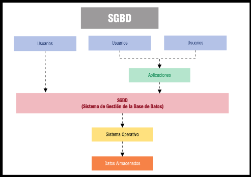
Las ventajas del uso de SGBD son:
El SGBD interacciona con otros elementos software existentes en el sistema, concretamente con el sistema operativo ( SO). Los datos almacenados de forma estructurada en la base de datos son utilizados indistintamente por otras aplicaciones, será el SGBD quien ofrecerá una serie de facilidades a éstas para el acceso y manipulación de la información, basándose en las funciones y métodos propios del sistema operativo.
Un SGBD desarrolla tres funciones fundamentales como son las de descripción, manipulación y utilización de los datos. A continuación se detallan cada una de ellas.
Esta función se realiza mediante el lenguaje de descripción de datos o DDL
. Mediante ese lenguaje: se definen las estructuras de datos,se definen las relaciones entre los datos y se
definen las reglas (restricciones) que han de cumplir los datos.
Se especificarán las características de los datos a cada uno de los tres niveles.
También se encarga de la
vista
externa de
todos los usuarios de la base de datos o vistas parciales que cada usuario tiene de los datos definidos con el DDL.
Por manipulación de datos entenderemos:
¿Y a través de qué lenguaje podremos desarrollar estas funciones sobre la base de datos? Lo haremos utilizando el Lenguaje Estructurado de Consultas (SQL: Structured Query Language). Este lenguaje proporciona sentencias para realizar operaciones de DDL, DML y DCL. SQL fue publicado por el ANSI en 1986 (American National Standard Institute) y ha ido evolucionando a lo largo del tiempo. Además, los SGBD suelen proporcionar otras herramientas que complementan a estos lenguajes como generadores de formularios, informes, interfaces gráficas, generadores de aplicaciones, etc.
Una vez descritas las funciones que un SGBD debe llevar a cabo, imaginarás que un SGBD es un paquete de software complejo que ha de proporcionar servicios relacionados con el almacenamiento y la explotación de los datos de forma eficiente. Para ello, cuenta con una serie de componentes que se detallan a continuación:
Un SGBD cuenta con una arquitectura a través de la que se simplifica a los diferentes usuarios de la base de datos su labor. El objetivo fundamental es separar los programas de aplicación de la base de datos física.
Encontrar un estándar para esta arquitectura no es una tarea sencilla, aunque los tres estándares que más importancia han cobrado en el campo de las bases de datos son ANSI/SPARC/X3, CODASYL y ODMG (éste sólo para las bases de datos orientadas a objetos). Tanto ANSI (EEUU), como (Resto del mundo), son el referente en cuanto a estandarización de bases de datos, conformando un único modelo de bases de datos.
La arquitectura propuesta proporciona tres niveles de abstracción: nivel interno o físico, nivel lógico o conceptual y nivel externo o de visión del usuario. A continuación se detallan las características de cada uno de ellos:
Para una base de datos, sólo existirá un único esquema interno, un único esquema conceptual y podrían existir varios esquemas externos definidos para uno o varios usuarios.
Gracias a esta arquitectura se consigue la independencia de datos a dos niveles:
En el siguiente gráfico se puede apreciar la estructura de la que estamos hablando:
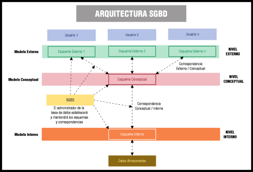
¿Qué tipos de SGBD existen? Para responder a esta pregunta podemos realizar la siguiente clasificación, atendiendo a diferentes criterios:
Actualmente, en el mercado de software existen multitud de sistemas gestores de bases de datos comerciales. En este epígrafe se desglosan las características fundamentales de los más importantes y extendidos hasta la fecha. Pero, como podrás observar, la elección de un SGBD es una decisión muy importante a la hora de desarrollar proyectos. A veces, el sistema más avanzado, "el mejor" según los entendidos, puede no serlo para el tipo de proyecto que estemos desarrollando. Hemos de tener en cuenta qué volumen de carga debe soportar la base de datos, qué sistema operativo utilizaremos como soporte, cuál es nuestro presupuesto, plazos de entrega, etc.
A través de la siguiente tabla se exponen los SGBD comerciales más utilizados y sus características más relevantes:
| SGBD | Descripción | URL |
|---|---|---|
| ORACLE |
Reconocido como uno de los mejores a nivel mundial. Es multiplataforma, confiable y seguro. Es Cliente/Servidor. Basado en el modelo de datos Relacional. De gran potencia, aunque con un precio elevado hace que sólo se vea en empresas muy grandes y multinacionales. Ofrece una versión gratuita Oracle Database 11g Express Edition. |
Oracle |
| MYSQL |
Sistema muy extendido que se ofrece bajo dos tipos de licencia, comercial o libre. Para aquellas empresas que deseen incorporarlo en productos privativos, deben comprar una licencia específica. Es Relacional, Multihilo, Multiusuario y Multiplataforma. Su gran velocidad lo hace ideal para consulta de bases de datos y plataformas web. |
MySQL |
| DB2 |
Multiplataforma, el motor de base de datos relacional integra XML de manera nativa, lo que IBM ha llamado pureXML, que permite almacenar documentos completos para realizar operaciones y búsquedas de manera jerárquica dentro de éste, e integrarlo con búsquedas relacionales. |
DB2 |
| INFORMIX |
Otra opción de IBM para el mundo empresarial que necesita un DBMS sencillo y confiable. Es un gestor de base de datos relacional basado en SQL. Multiplataforma. Consume menos recursos que Oracle, con utilidades muy avanzadas respecto a conectividad y funciones relacionadas con tecnologías de Internet/Intranet, XML, etc. |
Informix |
| Microsoft SQL SERVER |
Sistema Gestor de Base de Datos producido por Microsoft. Es relacional, sólo funciona bajo Microsoft Windows, utiliza arquitectura Cliente/Servidor. Constituye la alternativa a otros potentes SGBD como son Oracle, PostgreSQL o MySQL. |
Microsoft SQL Server 2008 |
| SYBASE |
Un DBMS con bastantes años en el mercado, tiene 3 versiones para ajustarse a las necesidades reales de cada empresa y adquirido por SAP en 2010. Es un sistema relacional, altamente escalable, de alto rendimiento, con soporte a grandes volúmenes de datos, transacciones y usuarios, y de bajo costo. |
Sybase |
Otros SGBD comerciales importantes son: DBASE, ACCESS, INTERBASE y FOXPRO.
Para saber más
Puedes completar más información sobre estos y otros sistemas a través de los enlaces que te proponemos a continuación:
La alternativa a los sistemas gestores de bases de datos comerciales la encontramos en los SGBD de código abierto o libres, también llamados Open Source. Son sistemas distribuidos y desarrollados libremente.
Estos SGBD pueden ser ser copiados, usados, estudiados, modificados y redistribuidos libremente.
Por otra parte, el desarrollo del sistema depende de la comunidad que existe a su alrededor.
En la siguiente tabla se relacionan los cinco más utilizados actualmente, así como sus principales características y enlaces a sus páginas web:
| SGBD | Descripción | URL |
|---|---|---|
| MySQL |
Es un sistema de gestión de base de datos relacional, multihilo y multiusuario con más de seis millones de instalaciones. Distribuido bajo dos tipos de licencias, comercial y libre. Multiplataforma, posee varios motores de almacenamiento, accesible a través de múltiples lenguajes de programación y muy ligado a aplicaciones web tales como: wordpress, joomla, prestashop, magento, etc. |
MySQL |
| PostgreSQL |
Sistema Relacional Orientado a Objetos. Considerado como la base de datos de código abierto más avanzada del mundo. Desarrollado por una comunidad de desarrolladores que trabajan de forma desinteresada, altruista, libre y/o apoyados por organizaciones comerciales. Es multiplataforma y accesible desde múltiples lenguajes de programación. |
PostgreSQL |
| Firebird |
Sistema Gestor de Base de Datos relacional, multiplataforma, con bajo consumo de recursos, excelente gestión de la concurrencia, alto rendimiento y potente soporte para diferentes lenguajes. |
Firebird |
| Apache Derby |
Sistema Gestor escrito en Java, de reducido tamaño, con soporte multilenguaje, multiplataforma, altamente portable, puede funcionar embebido o en modo cliente/servidor. |
Apache Derby |
| SQLite |
Sistema relacional, basado en una biblioteca escrita en C que interactua directamente con los programas, reduce los tiempos de acceso siendo más rápido que MySQL o PostGreSQL, es multiplataforma y con soporte para varios lenguajes de programación. Es muy común su uso en aplicaciones móviles y aparatos inteligentes. |
SQLite |
Si nos preguntamos cómo es la arquitectura de un sistema de base de datos, hemos de saber que todo depende del sistema informático que la sustenta. Tradicionalmente, la arquitectura centralizada fue la que se utilizó inicialmente, aunque hoy en día es de las menos utilizadas.
Sistema de base de datos centralizado: Es aquella estructura en la que el SGBD está implantado en una sola plataforma u ordenador desde donde se gestiona directamente, de modo centralizado, la totalidad de los recursos. Es la arquitectura de los centros de proceso de datos tradicionales. Se basa en tecnologías sencillas, muy experimentadas y de gran robustez..
Los sistemas de los años sesenta y setenta eran totalmente centralizados, como corresponde a los sistemas operativos de aquellos años, y al hardware para el que estaban hechos: un gran ordenador para toda la empresa y una red de terminales sin inteligencia ni memoria.
Las principales características de las bases de datos centralizadas son:
En la siguiente tabla se representan las ventajas e inconvenientes destacables de esta arquitectura de bases de datos.
| Ventajas | Inconvenientes |
|---|---|
| Se evita la redundancia debido a la posibilidad de inconsistencias y al desperdicio de espacio. | Un mainframe en comparación de un sistema distribuido no tiene mayor poder de cómputo. |
| Se evita la inconsistencia. Ya que si un hecho específico se representa por una sola entrada, la no-concordancia de datos no puede ocurrir. | Cuando un sistema de bases de datos centralizado falla, se pierde toda disponibilidad de procesamiento y sobre todo de información confiada al sistema. |
| La seguridad se centraliza. | En caso de un desastre o catástrofe, la recuperación es difícil de sincronizar. |
| Puede conservarse la integridad. | Las cargas de trabajo no se pueden difundir entre varias computadoras, ya que los trabajos siempre se ejecutarán en la misma máquina. |
| El procesamiento de los datos ofrece un mejor rendimiento. | Los departamentos de sistemas retienen el control de toda la organización. |
| Mantenimiento más barato. Mejor uso de los recursos y menores recursos humanos. | Los sistemas centralizados requieren un mantenimiento central de datos. |
La necesidad de integrar información de varias fuentes y la evolución de las tecnologías de comunicaciones, han producido cambios muy importantes en los sistemas de bases dendatos. La respuesta a estas nuevas necesidades y evoluciones se materializa en los sistemas de bases de datos distribuidas.
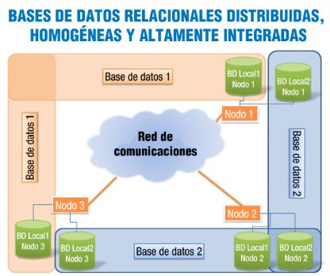
Un SGBDD desarrollará su trabajo a través de un conjunto de sitios o nodos, que poseen un sistema de procesamiento de datos completo con una base de datos local, un sistema de gestor de bases de datos e interconcetados entre sí. Si estos nodos están dispersos geográficamente se internocetarán a través de una red de área amplia o WAN, pero si se encuentran en edificios relativamente cercanos, pueden estar interconectados por una red de área local o LAN. Este tipo de sistemas es utilizado en: organizaciones con estructura descentralizada, industrias de manufactura con múltiples sedes (automoción), aplicaciones militares, lineas aéreas, cadenas hoteleras, servicios bancarios, etc.
En la siguiente tabla se representan las ventajas e inconvenientes destacables de las BDD:
| Ventajas | Inconvenientes |
|---|---|
| El acceso y procesamiento de los datos es más rápido ya que varios nodos comparten carga de trabajo. | La probabilidad de violaciones de seguridad es creciente si no se toman las precauciones debidas. |
| Desde una ubicación puede accederse a información alojada en diferentes lugares. | Existe una complejidad añadida que es necesaria para garantizar la coordinación apropiada entre los nodos. |
| Los costes son inferiores a los de las bases centralizadas | La inversión inicial es menor, pero el mantenimiento y control puede resultar costoso. |
| Existe cierta tolerancia a fallos. Mediante la replicación , si un nodo deja de funcionar el sistema completo no deja de funcionar. | Dado que los datos pueden estar replicados, el control de concurrencia y los mecanismos de recuperación son mucho más complejos que en un sistema centralizado. |
| El enfoque distribuido de las bases de datos se adapta más naturalmente a la estructura de las organizaciones. Permiten la incorporación de nodos de forma flexible y fácil. | El intercambio de mensajes y el cómputo adicional necesario para conseguir la coordinación entre los distintos nodos constituyen una forma de sobrecarga que no surge en los sistemas centralizados. |
| Aunque los nodos están interconectados, tienen independencia local. | Dada la complejidad del procesamiento entre nodos es difícil asegurar la corrección de los algoritmos, el funcionamiento correcto durante un fallo o la recuperación. |
Para saber más
Si deseas completar más información sobre las bases de datos distribuidas, puedes hacerlo a través del siguiente documento:
Arquitectura de Sistemas Gestores de Bases de Datos Distribuidos.
Sabemos que en los sistemas de bases de datos distribuidas la información se encuentra repartida en varios lugares. La forma de extraer los datos consultados puede realizarse mediante la fragmentación de distintas tablas pertenecientes a distintas bases de datos que se encuentran en diferentes servidores. El problema de fragmentación se refiere al particionamiento de la información para distribuir cada parte a los diferentes sitios de la red.
Pero hay que tener en cuenta el grado de fragmentación que se aplicará, ya que éste es un factor determinamente a la hora de la ejecución de consultas. Si no existe fragmentación, se tomarán las relaciones o tablas como la unidad de fragmentación. Pero también puede fragmentarse a nivel de tupla (fila o registro) o a nivel de atributo (columna o campo) de una tabla. No será adecuado un grado de fragmentación nulo, ni tampoco un grado de fragmentación demasiado alto. El grado de fragmentación deberá estar equilibrado y dependerá de las particularidades de las aplicaciones que utilicen dicha base de datos. Concretando, el objetivo de la fragmentación es encontrar un nivel de particionamiento adecuado en el rango que va desde tuplas o atributos hasta relaciones completas.
Cuando se lleva a cabo una fragmentación, existen tres reglas fundamentales a cumplir:
Existen tres tipos de fragmentación:
¿Qué es Oracle Database 11g Express Edition? Es un sistema de bases de datos libre para el desarrollo, implementación y distribución. Es un sistema para la iniciación, con un consumo reducido de recursos, basado en el producto Oracle Database 11g revisión 2. Su descarga es rápida y brinda un sistema de administración sencillo. Es un buen sistema de iniciación para desarrolladores en PHP, Java, XML y aplicaciones de código abierto, para administradores de bases de datos que necesitan una base de datos para su adiestramiento e implementación, para proveedores independientes de software o hardware que desean una base de datos inicial para distribuir libre de costes sus productos o para instituciones educativas o estudiantes que necesitan una base de datos libre con la que completar su curriculum.
para saber más
Si quieres conocer más características destacables de este sistema de bases de datos puedes acceder a toda la documentacion oficial online en el siguiente enlace:
Oracle Database 11g Express Edition.
Existe un foro que te puede resultar de mucha ayuda.
En este otro enlace podrás encontrar varios manuales de ayuda, explicado paso a paso las diferentes actuaciones y con imágenes, que te ayudarán a conocer detalladamente todos los aspectos relativos a la instalación de Oracle en los diferentes sistemas operativos y, también, administración de bases de datos:
Manuales de ayuda de instalación y gestor de bases de datos. .
(Tutoriales paso a paso)
¿Por dónde empezamos? El primer paso que debemos dar es descargar el software necesario desde la página oficial de Oracle. A través del siguiente enlace podrás acceder a la zona de descarga de Oracle Database 11g Express Edition, regístrate, escoge el que se ajuste a tus necesidades y descárgalo en tu ordenador.
Zona de descarga de Oracle Database 11g Express Edition. .
¿Quieres intentarlo con una versión mucho más actual?.
Zona de descarga de Oracle Database Express Edition XE) 18.4. .
¿Cómo se realiza la instalación? Para llevar a cabo la instalación del software descargado, dependiendo de tu sistema operativo, puedes visualizar alguno de los vídeos que te proponemos a continuación:
¿Cómo se usa? Puedes comenzar a usar esta herramienta de dos formas, realizando una gestión básica de datos a través del primer vídeo que te proponemos, o administrando usuarios de manera simple, a través del segundo vídeo propuesto.
|
Gestión básica de datos en Oracle Database 11g Express Edition
Resumen textual Alternativo |
Administración de Oracle Database 11g Express Edition
Resumen textual Alternativo |
Puede que algo se nos haya pasado. Puede que no esté claro o que necesite alguna actualización o añadido. No lo dudes y hazlo saber.